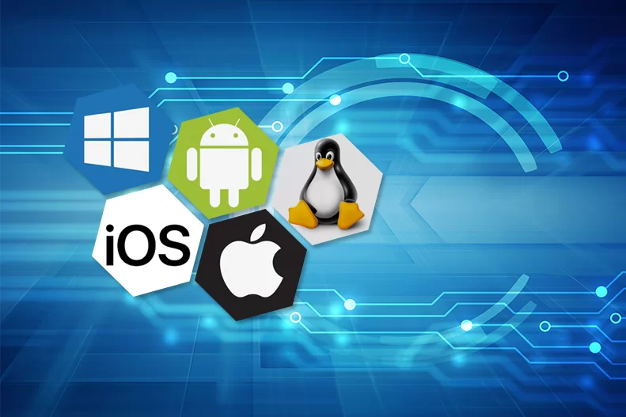

Exercícios Interdisciplinares
Sistema Operacional
sistema operacional é um programa de computador que gerencia os recursos de hardware e software de um computador. Ele gerencia as operações básicas do computador, como o acesso ao disco rígido, a memória e os dispositivos de entrada/saída. Além disso, ele fornece uma interface para os programas de aplicativos para que possam interagir com os recursos do computador. Alguns exemplos de sistemas operacionais comuns incluem Windows, macOS e Linux.
Windows

Windows é um sistema operacional desenvolvido e comercializado pela Microsoft. Ele é projetado para ser executado em computadores pessoais e é um dos sistemas operacionais mais populares no mundo. A primeira versão do Windows foi lançada em 1985 e desde então, várias versões foram lançadas, incluindo o Windows 3.0, Windows 95, Windows XP, Windows 7, Windows 8 e Windows 10.
O Windows é projetado para ser fácil de usar e fornece uma interface gráfica amigável para os usuários, além de uma variedade de aplicativos e recursos incorporados, como o Internet Explorer, o Windows Media Player e o Microsoft Office.
Linux
Linux é um sistema operacional de código aberto baseado no kernel Linux. Ele foi criado por Linus Torvalds em 1991 enquanto ele estudava na Universidade de Helsinque. Ele é projetado para ser executado em computadores de mesa, servidores e dispositivos móveis.
Linux é uma alternativa ao Windows e macOS e é amplamente utilizado em sistemas embarcados, dispositivos IoT, e servidores. Ele fornece uma interface de linha de comando, mas também oferece interfaces gráficas amigáveis para os usuários. Linux também é conhecido por ser altamente personalizável e oferece uma variedade de distribuições (como o Ubuntu, Debian, Fedora, entre outros) que incluem diferentes conjuntos de aplicativos e recursos.
Software livre e Proprietário
A principal diferença entre software livre e proprietário é como os usuários podem usar, modificar e distribuir o software.
Software livre é software que é liberado com uma licença que permite que os usuários o usem, modifiquem e distribuam sem restrições. Ele é geralmente desenvolvido por comunidades de voluntários e é distribuído gratuitamente. Exemplos de software livre incluem o sistema operacional Linux, o navegador Firefox e o pacote de escritório LibreOffice.
Software proprietário, por outro lado, é software que é controlado por uma empresa ou indivíduo e que é vendido ou licenciado com restrições no uso, modificação e distribuição. Exemplos de software proprietário incluem o sistema operacional Windows, o pacote de escritório Microsoft Office e o software Adobe Photoshop.
Em geral, o software livre é considerado mais flexível e personalizável, enquanto o software proprietário é considerado mais fácil de usar e suportado. No entanto, isso pode variar de acordo com o software específico.
Open Source

Open-source é um modelo de desenvolvimento de software no qual o código-fonte é disponibilizado ao público de forma gratuita, permitindo que qualquer pessoa possa usar, modificar e distribuir o software. O termo "open-source" foi cunhado em 1998 como uma forma de se referir a este tipo de software de código aberto, que é diferente de software proprietário, que é controlado por uma empresa ou indivíduo e tem restrições no uso, modificação e distribuição.
Os projetos Open-Source são geralmente desenvolvidos e mantidos por comunidades de voluntários e podem ser financiados por patrocínios, doações e outras formas de apoio. O objetivo principal do Open-source é permitir a colaboração e o compartilhamento de conhecimento para o benefício de todos. Exemplos de software open-source incluem o sistema operacional Linux, o navegador Firefox e o pacote de escritório LibreOffice.
Programas de Computador
Programas de computador são um conjunto de instruções escritas em um determinado linguagem de programação, que quando executado pelo computador, realizam uma tarefa ou conjunto de tarefas específicas. Eles são usados para automatizar tarefas e processos, como cálculos matemáticos, gerenciamento de banco de dados, navegação na web, edição de áudio e vídeo, entre muitas outras.
Os programas de computador podem ser divididos em dois tipos: sistemas e aplicativos. Os programas de sistema, tais como os sistemas operacionais, gerem as operações básicas de um computador e permitem que outros programas sejam executados. Os programas de aplicativo, por outro lado, são projetados para realizar tarefas específicas, como processamento de texto, planilhas eletrônicas e jogos.
Os programas de computador podem ser adquiridos comercialmente ou podem ser desenvolvidos por indivíduos ou comunidades de programadores. Alguns programas de computador são distribuídos gratuitamente como software livre ou open-source.
Sistemas de numeração:
inteiro, decimal, banário e hexadecimal
Os sistemas de numeração são diferentes maneiras de representar números. As quatro principais sistemas de numeração são inteiro, decimal, binário e hexadecimal.
- Sistema de numeração inteiro é usado para representar números inteiros, sem casas decimais. Ele é baseado no sistema de numeração decimal, mas só utiliza os dígitos 0 a 9.
- Sistema de numeração decimal é o sistema de numeração comumente usado no dia a dia. Ele é baseado em 10 dígitos (0 a 9) e permite representar números inteiros e números com casas decimais.
- Sistema de numeração binário é usado para representar números em sistemas digitais, como computadores. Ele é baseado em 2 dígitos (0 e 1) e é usado para representar informações binárias, como bits.
- Sistema de numeração hexadecimal é usado para representar números em sistemas digitais, especialmente na programação de computadores. Ele é baseado em 16 dígitos (0 a 9 e A a F) e é usado para representar valores de endereços de memória e cores em formatos de arquivo de imagem e vídeo.
Em resumo, o sistema decimal é o mais comum e fácil de entender para os humanos, enquanto os sistemas binário e hexadecimal são mais eficientes para o uso em computadores e dispositivos digitais.
Bit e Byte

Um bit (abreviação de "binary digit") é a unidade básica de informação em um computador. Ele representa um valor binário, ou seja, um valor de 0 ou 1. Os bits são usados para representar informações binárias, como dados, instruções e endereços de memória.
- Um byte é uma unidade de medida de armazenamento de dados. Ele é composto por 8 bits. Isso significa que um byte pode armazenar um valor de 0 a 255 (2^8 - 1) em decimal. Além disso, é utilizado para representar caracteres, como letras, números e símbolos.
- Em resumo, um bit é a unidade mais básica de informação em um computador, enquanto um byte é uma unidade de medida de armazenamento de dados.
Algoritmo e um Fluxograma
- Um algoritmo é uma sequência finita de instruções passo-a-passo para resolver um problema ou realizar uma tarefa específica. Ele é uma lista de passos bem definidos e ordenados que podem ser seguidos para alcançar um resultado desejado. Algoritmos são usados em muitas áreas, incluindo matemática, ciência da computação, engenharia e negócios.
- Um fluxograma é uma representação gráfica de um algoritmo. Ele usa símbolos específicos para representar diferentes passos ou operações, como início, fim, decisão e processo. As setas são usadas para mostrar a ordem dos passos e as ramificações de decisões. Fluxogramas são úteis para visualizar e entender algoritmos complexos, e para comunicar ideias de maneira clara e concisa.
Em resumo, um algoritmo é uma lista de passos para resolver um problema, e um fluxograma é uma representação gráfica desse algoritmo. Ambos são ferramentas importantes na programação e na resolução de problemas.
Extensão de um arquivo e sua funcionalidade
Uma extensão de arquivo é uma sufixo adicionado ao nome de um arquivo que indica o tipo de arquivo e qual aplicativo é usado para abri-lo. As extensões geralmente são compostas por três caracteres e são separadas do nome do arquivo por um ponto. Por exemplo, um arquivo chamado "documento.txt" tem a extensão ".txt", indicando que é um arquivo de texto simples.
As extensões de arquivo têm várias funções, incluindo:
- Identificar o tipo de arquivo: as extensões são usadas para identificar o tipo de arquivo, o que ajuda o sistema operacional e os aplicativos a saber como abri-lo e tratá-lo.
- Associar arquivos com aplicativos: as extensões são usadas para associar arquivos com aplicativos específicos. Por exemplo, um arquivo com a extensão ".docx" é aberto pelo Microsoft Word.
- Facilitar a busca por arquivos: as extensões são usadas para facilitar a busca por arquivos, permitindo que os usuários encontrem arquivos específicos com base no tipo de arquivo.
- Ajudar na segurança: algumas extensões são usadas para identificar arquivos potencialmente perigosos, como arquivos de script ou de macro, e impedir que eles sejam executados sem a devida precaução.
Em resumo, uma extensão de arquivo é uma sufixo adicionado ao nome de um arquivo que indica o tipo de arquivo e qual aplicativo é usado para abri-lo, tem várias funções como identificar o tipo de arquivo, associar arquivos com aplicativos, facilitar a busca por arquivos, e ajudar na segurança.